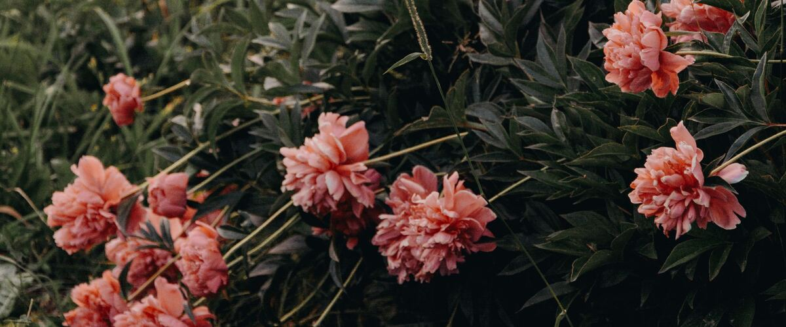

When to plant peonies in Bend and Redmond, OR
Plant bare-root peonies in Bend and Redmond from Oct 15 – Nov 15. They root over winter and usually bloom in the second or third spring.
- Difficulty
- Easy
- Sun
- Full sun; at least six hours
- Spacing
- 3 feet apart
- Planting depth
- Eyes (buds) 1 to 2 inches below the soil, no deeper
- Frost
- Fully hardy; needs winter cold to bloom
- Flowers
- Usually blooms in the second or third spring
Why these dates
Peonies settle in best when planted in fall: the roots grow in cool, moist soil before winter, and the plant needs winter chill to bloom. In Bend and Redmond the first fall frost usually comes around September 14.
High desert and mountains. Central and high eastern Oregon. Frost is possible almost any month. Use row covers, wall-o-water or cloches for warm crops, and choose short-season varieties.
How to grow peonies in Bend and Redmond
- Buy healthy bare roots with three to five pink or red eyes (buds).
- Pick a sunny spot with soil that drains well, and mix in compost.
- Plant them Oct 15 – Nov 15, eyes (buds) 1 to 2 inches below the soil, no deeper, 3 feet apart. Planting too deep is the main reason peonies don't bloom.
- Water once after planting. In spring, set a support ring over the shoots before they flop.
- Harvest: Cut when buds feel soft like a marshmallow and show color. Leave at least a third of the stems on the plant so it can rebuild for next year.
Key numbers
- 1–2 inches, no deeperEye depth
- 6.0–7.0Soil pH
- 6+ hoursSun
- Botrytis in wet springsBiggest risk
Growing notes
What makes the difference in Northwest gardens, in plain language.
Planting it right
Peonies can live for decades in one spot, and how you plant them decides whether they bloom. Set the pink or red buds, called eyes, no more than 2 inches below the soil. Buried deeper, plants grow leaves but few or no flowers. Choose full sun and well-drained soil enriched with compost; soggy ground rots the roots in wet west-side winters.
Peonies need winter chill to form flower buds, which the whole Northwest provides. Skip high-nitrogen fertilizer, which grows leaves instead of blooms.
Botrytis and ants
Botrytis, or gray mold, thrives in the cool, wet springs common west of the Cascades. Buds turn black and fail to open, and young stems wilt at the base. Cut all stems to the ground in fall and throw them out, remove infected buds as soon as you see them, and avoid crowding.
Ants crawling on buds are harmless. They're feeding on sugary nectar the buds produce and don't help or hurt the flowers. Just shake them off cut stems before bringing them indoors.
Care over the years and dividing
Established peonies need little: a ring support in spring for heavy-headed types, a little compost, and water in long dry spells. They resent being moved, so most plants never need dividing.
If an old clump declines, divide it in fall. Dig carefully, cut the root into pieces with three to five eyes each, and replant at the right depth. Expect divided plants to take a year or two to bloom well again. Itoh types like Bartzella have sturdier stems and rarely need staking.
Common questions
When is the last frost in Bend and Redmond, OR?
Typically June 9. In 9 years out of 10, frost is over by June 26. These are 1991–2020 NOAA climate normals for Redmond Roberts Field.
When do peonies bloom in Bend and Redmond?
Usually in May and June, a little later east of the Cascades and at higher elevation. Cut when buds feel soft like a marshmallow and show color. Leave at least a third of the stems on the plant so it can rebuild for next year.
When do peonies bloom?
Usually blooms in the second or third spring. Cut when buds feel soft like a marshmallow and show color. Leave at least a third of the stems on the plant so it can rebuild for next year.
Why won't my peonies bloom?
The most common cause is planting too deep: the eyes should be only 1 to 2 inches below the soil. Too much shade, a recent move or division, young plants and high-nitrogen fertilizer also cut down on flowers. Fix the depth in fall and be patient.
Are ants bad for peonies?
No. Ants visit the buds for their sugary nectar and do no harm. You don't need to spray them; just shake cut flowers before taking them inside.
When should I cut back peonies?
In fall, after the leaves have yellowed or been hit by frost. Cut stems to the ground and throw them out rather than composting, to reduce botrytis next spring. Itoh peonies are cut back to just above their short woody base.
Also plant in Bend and Redmond around the same time
Planting dates for peonies in nearby areas
- Klamath Falls, OR Oct 15 – Nov 15
- Burns, OR Oct 15 – Nov 15
- Prineville, OR Oct 15 – Nov 15
- Madras, OR Oct 15 – Nov 15
- Lakeview, OR Oct 15 – Nov 15
- Baker City, OR Oct 15 – Nov 15
Full planting calendar for Bend and Redmond · Peonies in every city